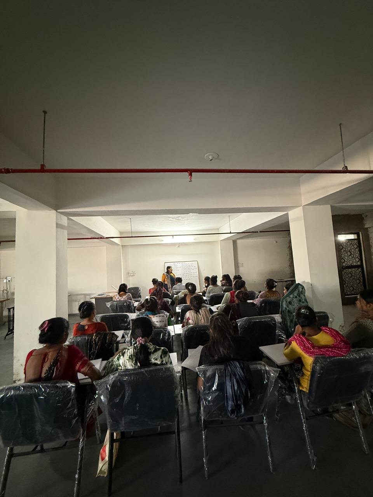

Your Support Can Change Lives
At Grameen Mahila Foundation, every rupee and every contribution of material directly reaches rural mothers, village students, and families facing difficult circumstances. We focus on real skills, trees in the ground, and food on the table.
Leena ben Kaushalkumar Patel
"Thank you, Leena ben Kaushalkumar Patel, for your support to our foundation."
We deeply appreciate your genuine commitment to the rural women, school children, and village families supported by Grameen Mahila Foundation. Your kind encouragement helps us expand our training batches and environmental drives.
How You Can Make a Difference
You can sponsor specific materials, student needs, or tree saplings. Here are our active community initiatives:
 Women Empowerment
Women Empowerment
Sponsor a Sewing Machine
A sewing machine gives a rural woman the ability to start tailoring from her home, earn daily income, and send her children to school with pride.
- Heavy-duty sewing machine & basic tailoring kit
- Free 3-month skill coaching at Sanand center
- Direct handover with photo update to the sponsor
 Child Education
Child Education
Sponsor Student Education & Books
Help children from hardworking rural families continue their schooling without financial distress. We provide notebooks, uniforms, and study kits.
- Annual school bag, notebooks, and stationery pack
- School exam fees and uniform assistance
- Free after-school tutoring support
 Environment Care
Environment Care
Sponsor Village Tree Plantation
Support our green mission across rural roads, village schools, and temple grounds. We plant native trees like Neem, Peepal, and Banyan that protect nature.
- Healthy native saplings and organic soil mix
- Protective bamboo or iron tree guards
- Regular watering and community care monitoring
 Emergency Relief
Emergency Relief
Sponsor Monthly Food Ration Kits
Ensure that elderly citizens, widows, and vulnerable rural families have nutritious meals during seasonal hardships, monsoons, and emergencies.
- Wheat flour, rice, lentils, cooking oil, and salt
- Nutritious staple food for a family of 4-5 members
- Direct field distribution by verified local volunteers
 Creative Arts
Creative Arts
Sponsor Art & Skill Materials
Provide art paper, drawing colors, oil pastels, brushes, and craft kits for children and young women participating in our creative workshops.
- Complete drawing sheets, paints, and brush sets
- Encourages creativity, focus, and confidence
- Annual exhibition showcase for young village artists

Digital SkillsSponsor Computer Literacy Seats
Help village girls learn computer basics, typing, online forms, and essential internet skills that prepare them for respectable administrative jobs.
- Hands-on computer practice and course materials
- Basic Office software, Gujarati typing, and internet
- Course completion certificate and guidance
How Support Works at Our Foundation
We maintain a direct relationship with every supporter. We ensure complete transparency, clear receipts, and direct photographic updates.
Contact Our Team
Call or WhatsApp our verified phone number +91 97230 03786 or email us at info@grameenmahila.org with the initiative you wish to support.
Coordinate Contribution
We share our official foundation bank details or arrange a direct handover of materials (sewing machines, saplings, stationery) at our Sanand office.
Field Implementation
Your sponsored materials are delivered directly to verified beneficiaries or planted during planned community plantation drives.
Photo Proof & Receipt
You receive official foundation acknowledgment along with photographs showing your contribution making a real difference in the field.
Frequently Asked Questions
Can I donate materials directly instead of money?
Yes, absolutely! We warmly welcome physical donations such as sewing machines, drawing paper, notebooks, school bags, tree saplings, and food grains. Please contact us before sending items so our coordinators can guide you on the nearest delivery point in Sanand.
Do you accept international donations?
We currently prioritize direct domestic support and grassroots partnerships within India. Please contact us at info@grameenmahila.org to discuss any specific inquiries.
Can I visit the training center to see my support in action?
Yes! We encourage donors and well-wishers to visit our Sanand center during training hours, meet the women learning stitching, or join us during a tree plantation drive.